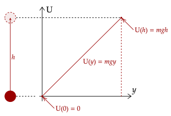

Let's now generalize to any conservative force and see what happens. First, recall that the change in potential energy is equal to the negative work done by conservative force. Then, we break the work into its line integral form.
This gives us an explicit formula for the potential energy function for any conservative force. Of course, the initial potential energy and the initial position are interconnected, and we can thankfully choose the value of it to whatever we so please.
Exercise 1
Show that the following is the gravitational potential energy using calculus. Note that if the initial potential energy is set to zero, the constant term drops out.
Solution
We set the coordinate system such that the origin is the initial position and the final position is somewhere on the cartesian plane. The formula for the potential energy function is as follows.
Once again, we break the integral's dot product into component form. The horizontal component drops out as usual, since weight has no horizontal component.
Problem 1
In one dimension, the magnitude of the gravitational force of attraction between a particle of mass and one of mass is given by the following equation.
In the equation, is a constant and is the distance between the particles. What is the potential energy function? Assume that the potential energy function approaches zero as the distance between the two particles approach infinity.
Solution
We use that fact that the potential energy function is zero at infinity, so we set our initial position there. Since the function only has a horizontal component, we break down the dot product to its components.
Note also that since this is an attractive force, the sign of the function must be negative.
One thing to do is note the final sentence, saying that this approaches zero as the distance approaches infinity. If distance approaches infinity, then the first term drops out.
This gives a value for the initial potential energy. Thus, we have the following potential energy function.
One thing to note is that since we have a function, we can actually plot out the potential energy with respect to position. This gives us what is called a potential energy diagram. For example, let's draw the potential energy diagram for the gravitational potential energy.
Since we only care about the vertical position, we will just consider a projectile thrown straight up, falling back down.
